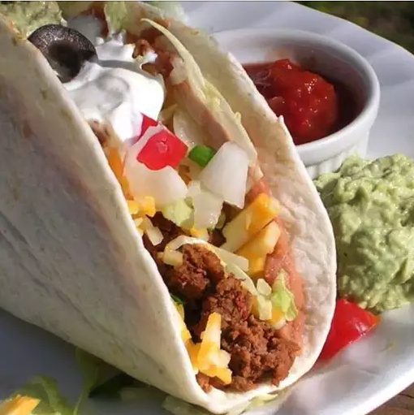

Tacos

Delicious Tacos
The one thing I've come to love, are tacos. Not just any tacos, but my tacos. I like my recipe, and my recipe
only as it seems.
I've tried other peoples tacos, but I always come back to my own. I can enjoy them as a burrtio, stuffed in hard
shells, and what has become my favorite, on top of a baked potato.
Ingredients
- Ground Chuck (or any meat of your choosing)
- Taco seasoning
- Chili powder
- Half an Onion
Steps
- Cook meat in skillet
- Add diced onion during the cooking process. You can also add your favorites during this process
- Drain meat once it's cooked thorougly
- Add seasoning, hydrate with water as needed
- Let simmer for about 3-5 minutes or until the meat has absorbed the seasoned water
- Enjoy the deliciousness